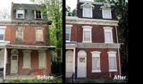
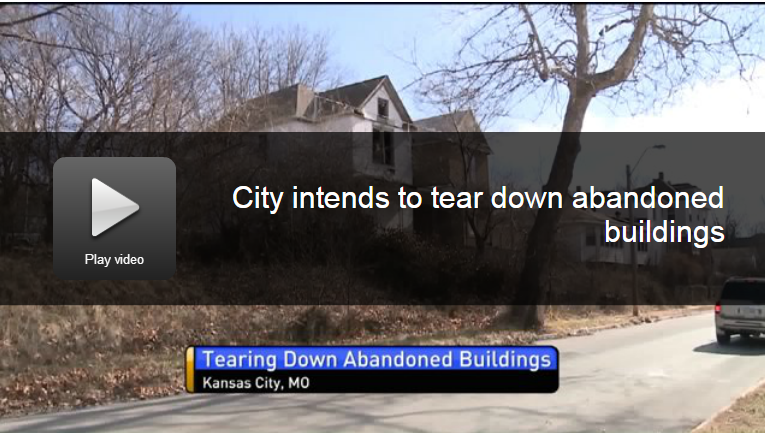

From Abandoned
Factories To Modern
Homes
A Collection of inspiring pictures of formerly abandoned factories renovated into modern housing.
Similar Project
From Detroit
MCM is a comprehensive effort to digitize Detroit's property information and create clear communication channels back and forth between the public, the government, and city service providers.
Loveland
Technologies
Here at Loveland, we're dedicated to providing the general public with free and accurate information. We've recently published reports on a variety of topics, including fires in Detroit, the 2015 tax foreclosure auction, Detroit's parks and other recreational facilities, the growing number of marijuana dispensaries, and many more to come!
From Abandoned
Factories To Modern
Homes
Blub: The latest edition of The Bright Side features guest host Dan Kildee of Community Progress, with segments on housing and green projects, deconstruction, commercial development and the basics of land banking.
Useful
Community
Development
Useful Community Development goes over the various ways you can try to address abandoned properties in your neighborhood in order to keep them from negatively impacting your home town.
Chicago Land Bank
Uses Big Data to
Target Vacant Homes
This article overviews the land banks in major cities that facilitate the process of turning abandoned properties into productive properties faster. This includes city-owned lands and foreclosed houses in the hands of banks. It talks about using big data science together with land banks to make the process transparent and efficient.
Food Factory
To Be
Transformed
It may not look like much on the outside, but over the next few years a former food factory in Chicago is going to be turned into a lean, mean, food growing machine.
Turning Liabilities
Into
Assets
This is a comprehensive analysis of the effects abandoned buildings has on the neighborhood and the ways to solve the problem.
Chicago
Claims
Progress
About a year ago, an investigation by The Chicago Reporter examined the scourge of vacant buildings in the aftermath of the foreclosure crisis and Chicago’s efforts to hold financial institutions responsible for maintaining the properties.
Updating Abandoned
Buildings Could
Reduce Crimes
The presence of [abandoned buildings] leads to poorer health and feelings of hopelessness among residents, increased mortality among drug users and the spread of sexually transmitted disease, studies have shown.

Remediating Abandoned
Remediating Abandoned
Buildings Reduces
Crimes
Fixing up abandoned buildings in the inner city doesn’t just eliminate eyesores, it can also significantly reduce crime and violence, including gun assaults, researchers from the University of Pennsylvania and Penn’s Perelman School of Medicine report in the first study to demonstrate the direct impact of building remediation efforts on crime.

City Hopes
City Hopes
Cleaning Will
Reduce Crimes
City leaders hope a ten million dollar bond issue will help clean up the community of hundreds of dangerous and vacant buildings.
A Block
of
Board-ups
Foreclosure and board-ups are a part of life today on the street that Ms. Washington, 73, says was “just beautiful” when her family moved there from the Cabrini-Green housing project on the North Side.
$35 Million backlog
In Razing
Abandoned Buildings
The article explains that the city has a large demolition backlog. It also notes that 30 percent of vacant buildings are homes owned by deceased elderly people with no mortgage and no family member who want the property
Vacant
and
Abandoned
The housing crisis lives on in the homes it has emptied—and banks aren't taking responsibility
What to do
With
Abandoned Buildings
The Dec. 1999 Worcester fire started in a vacant structure, the Cold Storage Warehouse. But how many such potential fire hazards are waiting to happen?